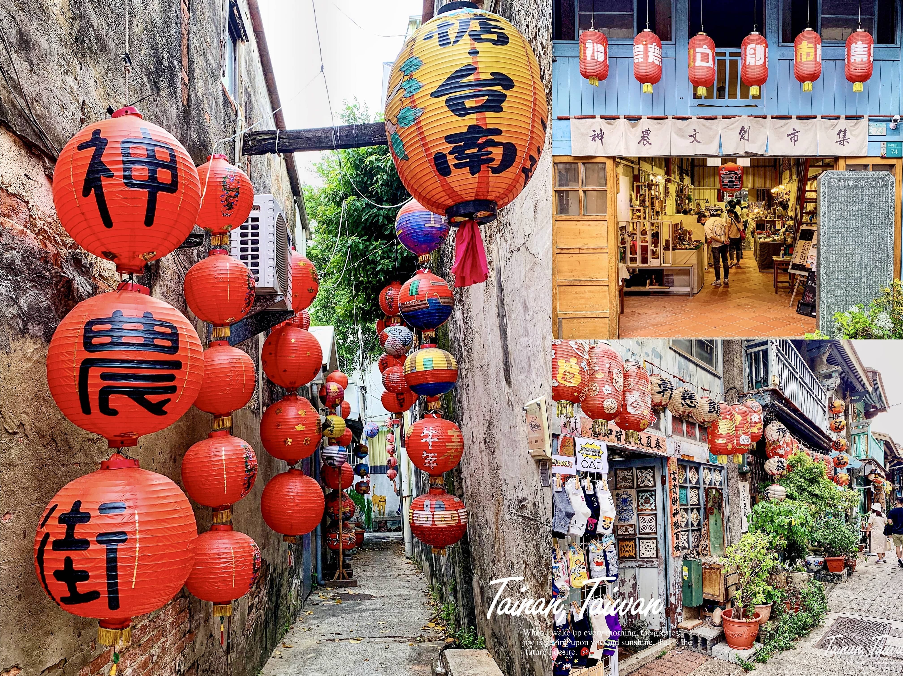
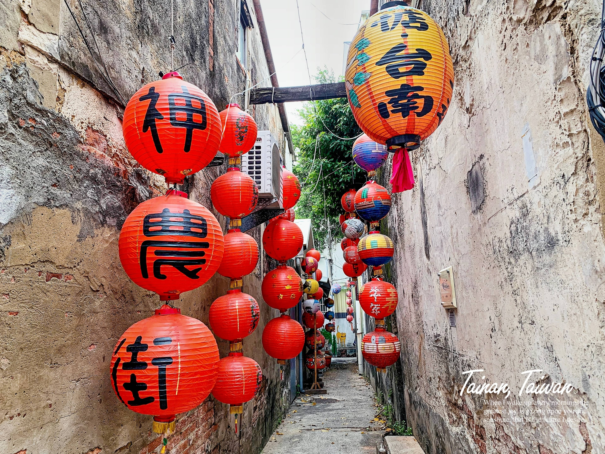
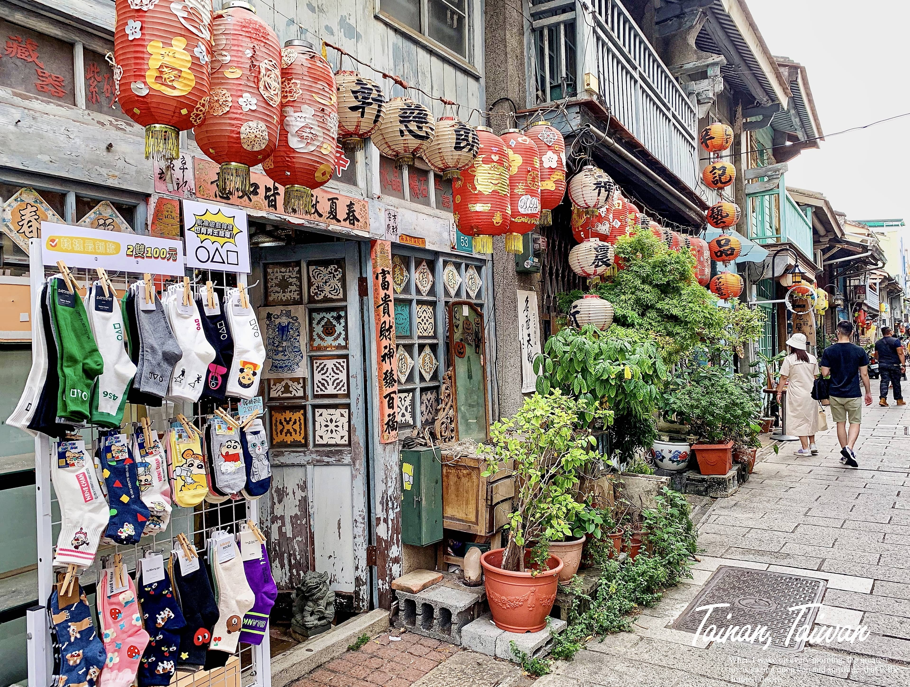
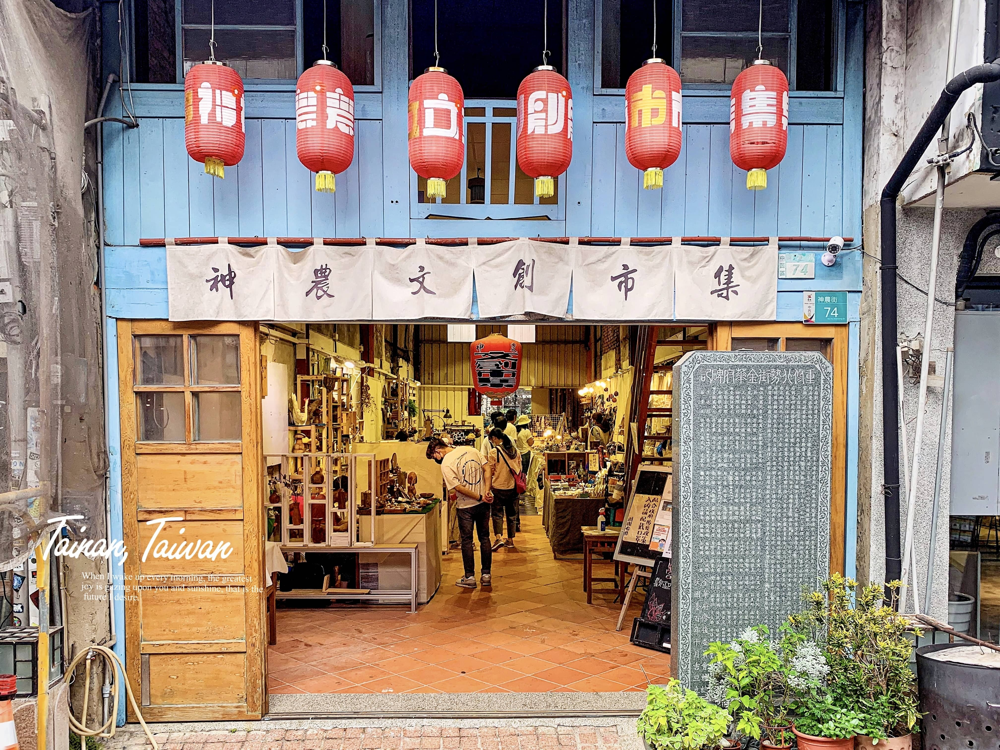
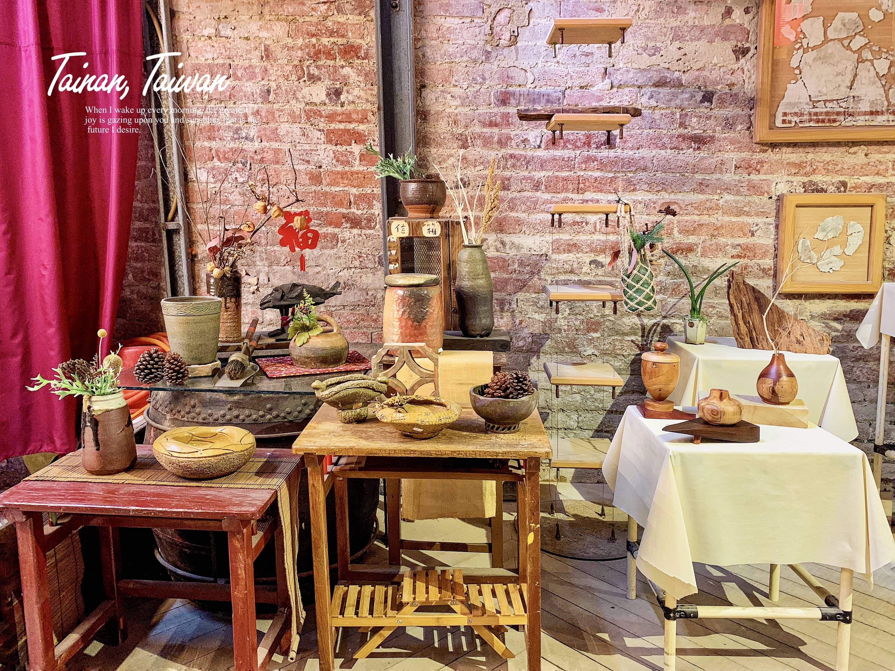
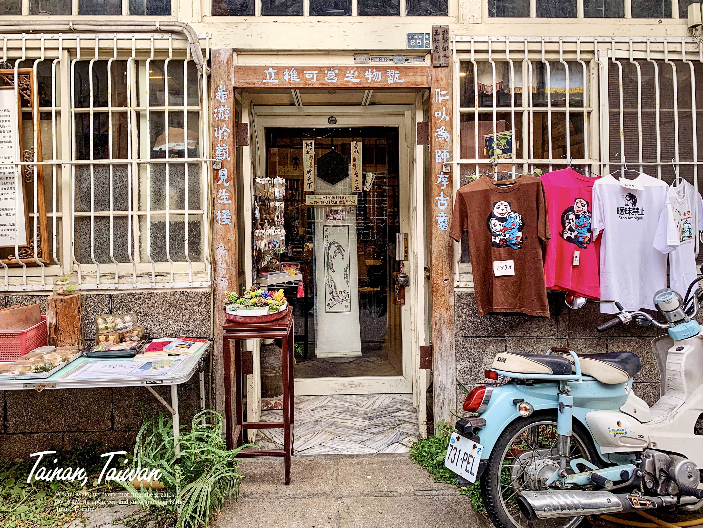
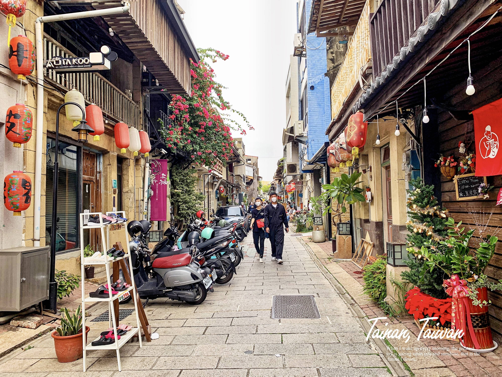
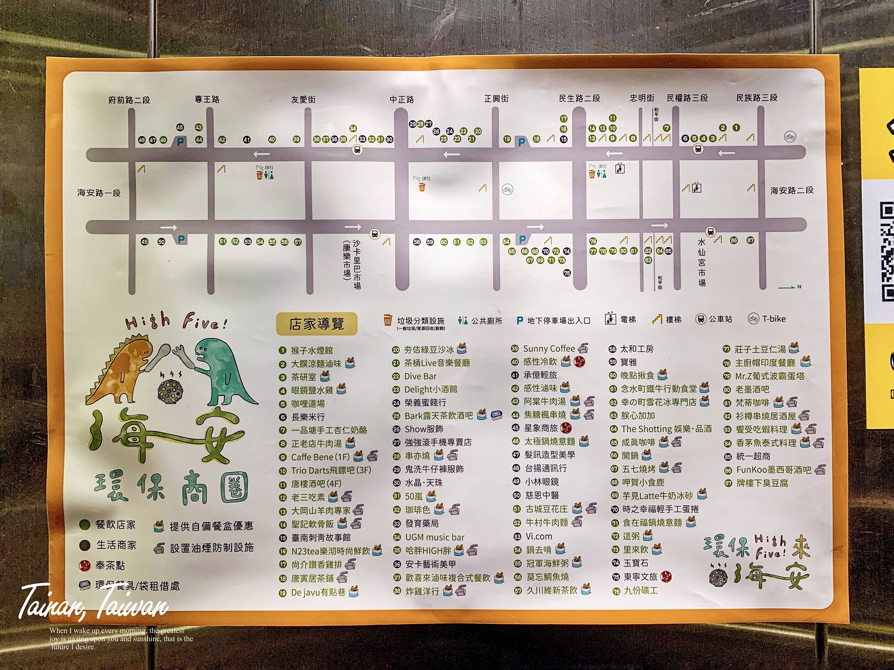

台南旅遊景點推薦｜【神農街】超夯文創老街！
到訪台南旅遊不可錯過的必逛景點，值得細細品味的特色文創，每個小店都藏著滿滿的驚喜！

今天要帶大家走訪的是台南保留老宅風格的「神農老街」
到了台南除了品嚐小吃美食，不可錯過的還有熱門的文青打卡景點，以及超夯的文創老街
像是充斥濃厚懷舊復古氛圍的「神農街」，也是到訪台南旅遊不可錯過的必逛景點
結合了古蹟歷史的建築和在地傳統文化，古都特色鮮明，吃喝玩樂選擇多元，還充滿著台南人獨有的濃厚人情味
每個小店都能發掘特色文創，有些是傳承下來的工藝技術，也有些是新舊文化激盪出的創意結合
每個角落都值得路過的旅人放慢腳步，細細品味，感受台南特有的風格特色，一起來場文青旅行吧
❝ 老街古宅融合特色文創—神農街 ❞

古色古香的老宅街道裡，有住家、文創小店、民宿...等，保留了傳統歷史與創新的結合
復古懷舊與現代的交錯感，別有一番風味，更是近幾年超夯的必逛文創聖地
許多文創小店都自有不同的特色，很值得放下腳步，慢慢悠晃，去享受這樣獨特的氛圍


「神農文創市集」內展售了各式文創小物，很值得來挖寶
雖然市集佔地不大，卻很溫暖，每個攤位的老闆都很親切，能感受到台南人的熱情與濃厚的人情味
就算只是短暫的佇足閒晃，也讓人倍感放鬆，很舒服的氛圍感～～

市集走到底，還能欣賞懷舊感的文創古物，各式擺件看起來都充滿濃厚的懷舊氛圍



每間小店都各有特色，同時也帶出了新的氣息，讓老宅街道有了新的年輕的生命力
新舊並存激盪出的特色，也是台南最美最具文化特色的風景，讓人忍不住想多看多感受這迷人的魅力



夜晚神農街更會擺脫白天的文青氣息，搖身變成不夜城，小巷內滿滿都是特色酒吧
到訪台南旅遊不可錯過的必逛景點，每次到訪光臨都能有不一樣的感受與驚喜，絕對滿足相機也滿足心靈的享受
藏著滿滿的驚喜！很值得細細品味的特色文創與文化激盪